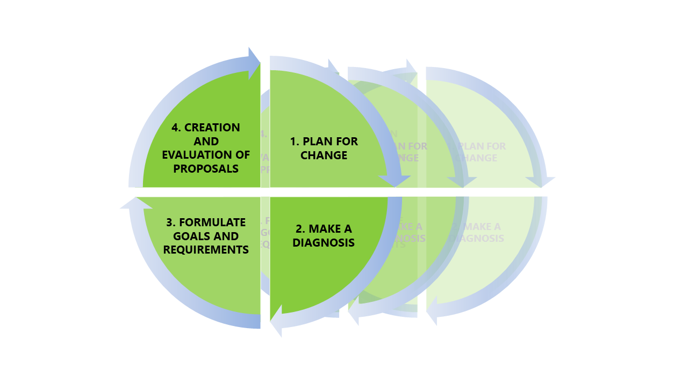

19 Iterative design of mining workplaces
Erik
When making and implementing changes to mining industries, it’s rare to see large extensive changes take place, which is likely due to the complexities of the systems involved in a mine. Instead, changes are often implemented incrementally, with individual implementations coming together as a larger change effort over a longer period of time. The development and implementation of changes and solutions can sometimes take between 7 and 10 years to complete, after which they remain in use for at least just as long. The problem is that the changes may have already become obsolete at the point of their implementation due to this long implementation process. The designers and planners must thus ensure that they don’t introduce long-lasting changes that negatively affect the working environment. This can, however, become difficult due to how mining change projects are structured.
According to Lööw, Johansson, Andersson, and Johansson [1], design processes in mining industries are rarely iterative and human-centred processes, instead following more linear processes with a technology-centred perspective. While these processes have been successful at times in the mining industry, there are cases where it’s only revealed which issues that are relevant late into the project. A linear process doesn’t allow for earlier parts of the process to be easily revisited, which could make necessary adjustments difficult or expensive. With how long the development times can be for mining implementations, this can risk invalidating several years’ worth of work. An iterative design process is more suited for adapting to changing goals and requirements, in addition to placing a greater focus on user feedback. This, in turn, provides better opportunities to create results that addresses relevant issues and user needs.
The iterative design process has been described by several different authors as consisting of a varying number of steps. The process can be generalized, however, into four steps: planning, diagnosis of the present status, formulating demands, and creation and evaluation of proposals. When working with an iterative process, these four steps are followed in order, with more focus being put on the first steps early in the project. Once all steps have been completed, the process cycles back to the planning phase and work begins again, only this time more emphasis and detail is put on the following steps. Osvalder, Rose, Karlsson, Eklund, & Odenrick [1] describes this design process using project circle similar to figure X. During the cycles, several different solutions should be created in order to compare and judge between different alternatives. The solutions that satisfy the demands of the project can then be assessed and combined with other solutions, while the solutions that don’t can be removed. This design process continues, with each cycle shifting the work focus more towards the final steps, until a final proposal has been gradually developed and chosen.

Figur 1: An illustration of the project circle describing an iterative design process TEMP
To more specifically describe the work that goes into the steps of an iterative work process, Ranhagen [1] starts with describing how the planning phase can be separated into three parts; formulating the goals in general terms, creating a project organisation, and separating the work into stages. A project organisation can consist of a decision-making body, a health and safety reference group and a project group. The important thing here is to include both people with experience in design work and people from the areas of the workplace that will be affected by the changes, like maintenance workers or miners. The second step of the iterative process, the diagnosis step, consists of documenting and investigating the current state of the workplace; what problems exist, how the work is done today, what will be done in the future, and so on. During the third step, functional demands are to be established and developed. These demands help guide the creation of concepts and solutions by serving as objectives that needs to be fulfilled. At the same time, they need to promote creativity by not specifying a certain solution, for example by having a demand for good air quality instead of a demand for extensive ventilation systems. If one demand is more important than another, a weight point can be applied to each demand that signifies its importance. The final fourth step entails using different creative methods to create solutions that can then be evaluated after how well they fulfil the established demands. Here, the weight of the demands can be combined with how well the solution fulfils it in order to create a score system, allowing the designers to see which solution that generally fulfils the demands best. It is important to note, however, that having the highest score doesn’t guarantee that the solution is the best choice. Before making a decision, the results should be assessed to see if the solution is sensible, or if another solution is a viable alternative despite not scoring as high.
As mentioned before, the benefits of using iterative design processes in mining industries comes from the flexibility in creating solutions. This flexibility helps make projects less vulnerable to changes in focus, or if a new problem arises midway through. Furthermore, an iterative process offers more opportunities to create attractive workplaces for both new and existing employees by involving them more in the design process. This makes it easier to discover and adapt the solutions to their needs and wants, which helps create workplaces where they want to work.
References
1. Blauner R (1964) Alienation and freedom: The factory worker and his industry. University of Chicago Press, Chicago